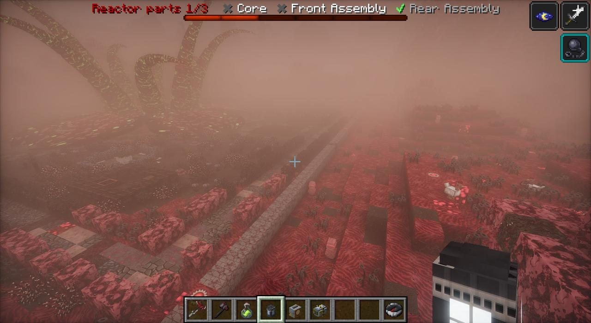
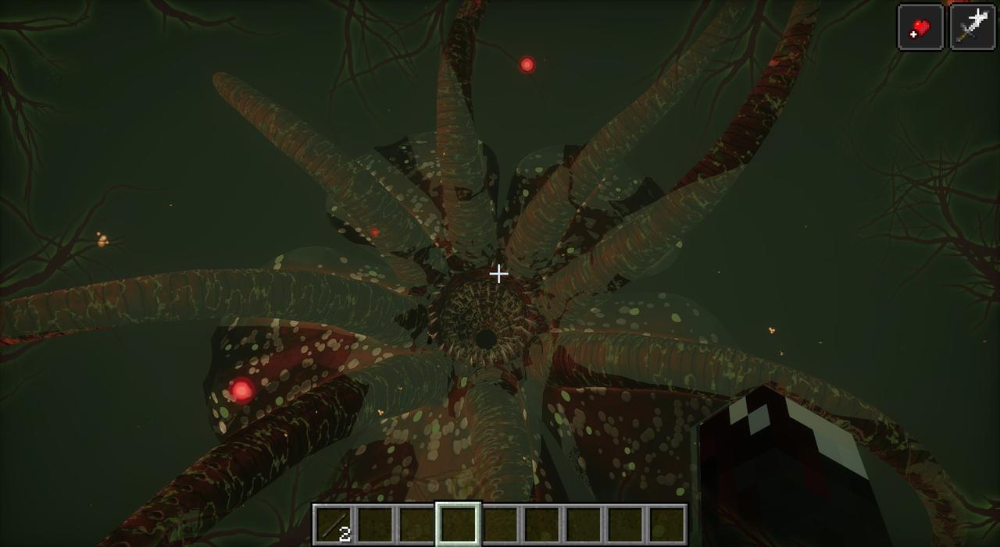

- Forms
- The Great Flower (under the dome), the Great Bloom (in its realm and risen), the changed Bloom
- First seen
- Chapter three
- Reach
- About 26 blocks risen; 90 once changed, and growing
- Ends
- Only the Omni (since 1.43.0)
- Made
- The Flesh, from the rot its carrion flies carry

The great flower
It opened one night under the glasshouse dome. Nobody planted it. Head Gardener E. Thorne wrote that it was warm, with a beat in its stalk like a sleeper's. He told the Rosemont Courier it was a Rafflesia, "though not one I know". It's the size of a room, its tendrils feeling about, and anything they drag in is lifted, wrapped and swallowed. Get close and it latches on and you're Sapromyiophilous: carrion flies swarm you, you rot and hunger, and it feeds. Only the Gardener's Weeds keep the flies off: "the great flower knows these clothes".
The bud was only a finger. Dr. Marsh's research log: "Its root goes down through the rotunda's floor and keeps going. We let down a line four hundred feet. It kept going."
The Great Bloom
Far down under the islands of the Bloom is the real great flower. Five great warted petals, red going black with the rot coming up green through them, and where the bud had its heart, a mouth: a lip of flesh and a throat ringed with rings of hooked teeth that turn against each other as it chews, a sick light far down in it. Its mouth is wider than all the islands together (since 1.27.2 it's ten times the size it was, every way), and its petals reach out further than you can see.
Round the mouth rise eight tentacles, each as wide as a hill at the root, curling over far above you. Fall and one comes straight up out of its throat after you.
It is horrible to be near. Out in its realm the edges of your sight go green-black and veined, the veins pulsing with its heart; something whispers just behind you, wherever you turn; now and then, for a blink, you see its mouth. Its throat has faces in it, pressed out through the flesh, mouths open. It drools. It chews. It calls, something vast with more voices in it than there should be, and now and then it speaks.
The risen Bloom
Break the Binding and it comes up the root, through the glasshouse, and takes the gardens' place for good. This one is the size the first was, not the colossal one below. Its tentacles reach for anything that comes within about 26 blocks (players first), and its flies infect anyone near it without the Gardener's clothes. It clears everything under the reach of its petals and turns the ground under them to its flesh. Its mouth is open: a pit down its throat lined with its flesh, and at the bottom a pool of yellow-green acid, scummed over, beating with its heart.
Ten seconds after it rises, the Flesh wakes.
Swallowed alive
Since 1.38, people it eats don't die in its teeth. They go down its throat alive and land in its stomach: a chamber of wet red folds lit from inside, with a knee-deep pool of green acid that eats at you and your armour. Round the pool lie what's left of the ones it ate before you; dig through each pile once for their things. The throat overhead is shut, and nothing opens it.

The way out: hack at its stomach wall. It heals over at once, but it feels every cut and heaves. Cut it ten times (the bar at the bottom of your screen) and it retches you, and anyone in there with you, back up onto the ground well away from it. Stay down there and it digests you ("was digested alive").
you're alive. you're in it. it's digesting you.
cut at the walls. hurt it enough and it'll throw you back up.
The changed Bloom
The Rosemont Device going off inside it was never going to kill it. The Watcher needed it to change.
The changed Bloom is ten times bigger. Its flesh has gone blue, its acid purple, its teeth green, and it sits in a pit it tears out of the ground, its petals standing up off the ground like a flower's, their tips seventy-odd blocks up. It reaches for anything within ninety blocks. Its roar goes all the way round the world, heard from anywhere, late and echoing the further off you are. Near it, its violet light creeps in at the edges of your sight.
The blight
Over three days its blight grows out from it, up to two thousand blocks every way: blue flesh where the grass was, blisters of its acid (they burst, burning and poisoning), its green teeth up out of the ground (they cut whatever pushes through), blue tissue where the leaves were, a violet haze off all of it, the ground breathing.
It is hungry
Since 1.42 everything it gets down its throat makes it bigger: an animal a little, a villager more, one of you a lot, up to three times the size it changed to, its mouth three hundred blocks across and its petals out past six hundred, filling the sky. Fed, it chews, its heart slow. Hungry, it reaches twice as often and comes up out of the ground under anyone out on its petals. Starving (six minutes without), all of that faster, its mouth hanging open, drool pouring off its lip. Close to its mouth you can hear the ones it ate, still in there, muffled, pleading.
it's growing. everything it eats, it gets bigger.
twice the size it was. don't let it eat. stay off its petals.
it's filling the sky. use the gun while there's still something to aim at.
that's as big as it gets. it's still hungry.
How it dies
Only the Orbital Railgun's strikes can hurt it, and since 1.43.0 it heals as fast as you tear it. Only the Omni ends it. Stand fifty blocks or more off its mouth and fire the Omni at it. SENTINEL comes down out of orbit and fires into its mouth; the Bloom fires its own beam back, every colour gone wrong. If it has eaten too much, the Watcher gives the station all of its power.
What's left is a husk. Its mouth, teeth, throat and tentacles are gone, vaporized, and its petals lie round the hole, scorched, slowly going brown like any dead flower's. The blight dies back. So does the Flesh, everywhere except the places it built itself into.